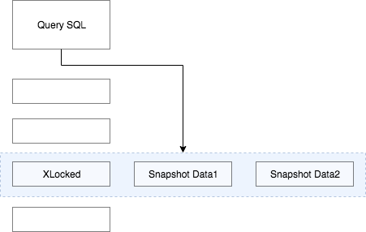

概念
一致性非锁定读（consistent nonlocking read）是指InnoDB存储引擎通过行多版本控制（MVCC）的方式来读取当前执行时间数据库中行的数据。如果读取数据的行正在执行DELETE或UPDATE操作，这是读取的操作不会因此去等待锁的释放。而是会直接读取行的一个快照数据。
 上图可以直观展示出查询不需要等待访问数据行上面的X锁的释放，而是直接读取快照版本。（快照版本主要是通过undo端来记录），由于快照数据没有被修改的场景，因此读取快照数据是不需要上锁的。这也是为什么被成为一致性非锁定读。
事务隔离级别
非锁定读机制极大的提高了数据库的并发性。这个也是InnoDB存储引擎默认的读取方式。 但是再不同的事务隔离级别之下，读取的方式不同。且不是每个事务隔离级别都采用一致性非锁定读。
在事务隔离级别READ COMMITTED和REPEATABLE READ(InnoDB存储引擎的默认隔离级别)下，InnoDB存储引擎使用非锁定一致性读。然而这两个隔离级别读取的快照数据定义也不同。
READ COMMITTED隔离级别的一致性非锁定读
在READ COMMITTED事务隔离级别下，一致性非锁定读总是读取锁定行最新的一份快照版本。
[注]READ COMMITTED的事务隔离级别而言，从数据库理论角度来看，其违反了ACID中I（隔离）的特性。
REPEATABLE READ隔离级别的一致性非锁定读
在REPEATABLE READ事务隔离级别下，一致性非锁定读总是读取锁定行事务开始时行数据版本。
MVCC多版本并发读
一致性锁定读
在某些场景下，用户需要显示的对数据库读取操作进行加锁。InnoDB存储引擎对SELECT语句支持两个一致性锁定读（locking read）操作：
- SELECT … FOR UPDATE 对读取的记录加一个X（排他锁），其他事务不能对已锁定的行加上任何锁。
- SELECT … LOCK IN SHARE MODE 对读取的行加一个S锁（共享锁），其他的事务可以对想被锁定的行加S锁，但是如果加X锁，就会被阻塞。
而对于一致性的非锁定读，及时读取的行已经执行了SELECT ... FOR UPDATE也是可以被执行的。
另外，对于SELECT ... FOR UPDATE和SELECT ... LOCK IN SHARE MODE必须在事务中，当事务提交，锁就释放了。务必加上BEGIN,START TRANSATION 或者SET AUTOCOMMIT=0